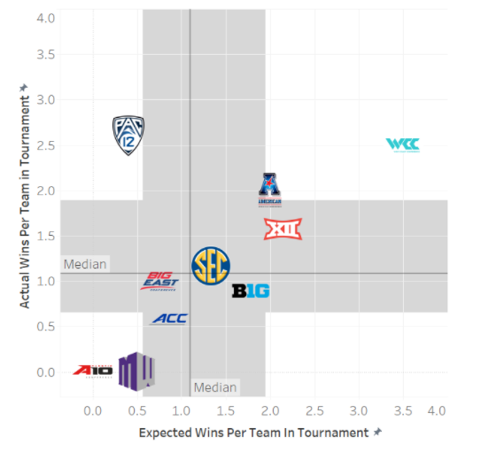
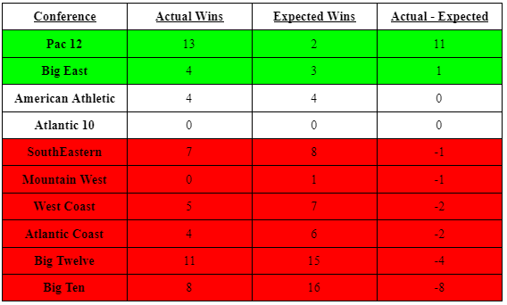
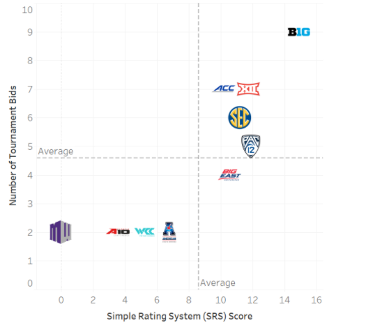

A Sane Retrospective of the Madness of March
By Jake Lamb | May 16, 2021

The NCAA tournament this year brought many surprises. From number 11 seed UCLA making it to the final four and losing on a fluke half courter by Gonzaga guard Jalen Suggs to the magic of Max Abmas and Cinderella Oral Roberts overcoming being given a fifteen seed and taking down number two seed Ohio State on the way to the Sweet 16 there was no shortage of excitement. One of the most surprising occurrences of the NCAA tournament this year was the overwhelming representation of the PAC12 in the later rounds of the NCAA tournament. A quarter of the teams in the sweet 16 were representatives of the PAC 12 conference and three out of eight of the elite eight teams were from the PAC 12 (Oregon State, UCLA, USC). This came as a shock to many of the college basketball experts as the PAC 12 was constantly disrespected during the regular season.
Taking a look at the ten most prolific conferences in college basketball this year, it is easy to see that there are major discrepancies in how conferences were expected to do and how they actually did. The graph below shows the expected wins of a conference (based on how far teams were projected to go based on their seed) per team in the conference that made the tournament and the corresponding actual wins of a conference per team.
 Coming into the tournament, the Big 10 and Big 12 had the highest expectations and dominated the field with 16 teams in the tournament coming from just these two conferences (9 from the Big 10 and 7 from the Big 12). The Big 10 especially was predicted to take over the tournament with half the one seeds and two seeds belonging to them. This ended up being the metaphorical kiss of death for the Big 10 as only one team (Michigan) made it to the elite eight where they were taken care of by UCLA. The Big 10’s actual to expected tournament wins ratio was much lower than expected during the tournament at roughly half an actual win per every expected win (.89 actual wins vs 1.8 expected wins). On the opposite side of the spectrum, the PAC 12 blew expectations out of the water with 6.5 actual wins per every expected win.
The Big 10 and Big 12 conference had been far and away the two most predominant forces in college basketball during the regular season with the top 25 rankings nearly being half filled with teams from these juggernauts. These conferences had the best overall records of any other conference with the one exception of the West Coast Coast which was heavily aided by the Undefeated (in the regular season) Gonzaga Bulldogs.
One of the metrics used to rank teams during the regular season is the Simple Rating System (SRS). The SRS takes into account the Strength of schedule of a certain team along with point differential and returns a number of points above or below average (via Basketball-reference.com). As the graph below shows, the Big Ten had a far greater SRS than any other conference, followed by the PAC 12 and the Big Twelve.
The Big Ten and Big Twelve are not surprises when it comes to being at the top of this ranking as they were responsible for two out of the three highest regular season winning percentages. The PAC 12 on the other hand, stands out. The PAC 12 had a below average regular season winning percentage (partially due to the 5-21 Washington Huskies and the 9-20 Cal Bears) yet they had the second highest SRS of any conference.
When it comes down to it, the regular season means nothing once a team makes the tournament. Even with rating systems gushing about how strong a certain conference is, there is still an incredibly high chance that a conference will fall under the perils of march. This uncertainty is why the NCAA tournament is such a huge event year after year. Any team has a chance to win it all regardless of what conference they are from and how poorly they have done in the regular season.